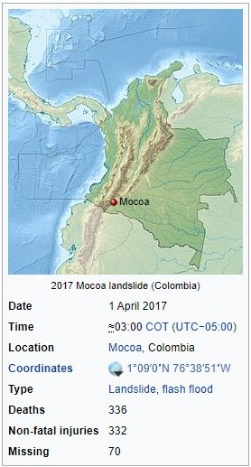
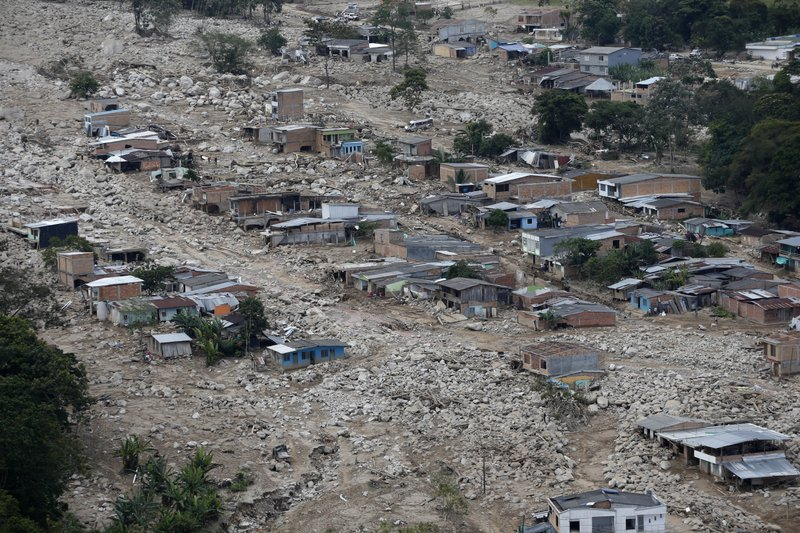
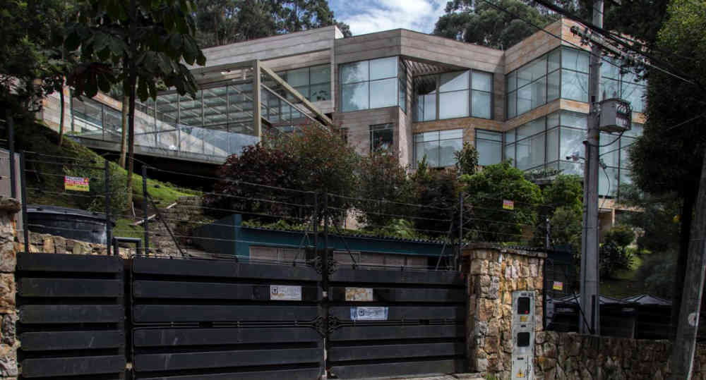

There are two reason to create this APP. The two arguments to consider in the develop of this APP, the slope and the Natural Areas.
- In 2017, there was a natural disaster in the city of Mocoa, in the department of Putumayo (Colombia), one of the reasons for this tragedy was that during the day a locally intense precipitation in the high and eroded zones generated a and a landslide that triggered an unexpected flooding killing at least 254 people, injuring 332, and leaving 70 others missing (Podlaha et., al, 2017). Likewise, there are other vulnerable areas in the country that could suffer this kind of hazards. That is one of the purposes of our APP, generated susceptible zones to reforest based on the slope to avoid eroded zones. Other interesting purpose to develop this app is to identify the natural zones to avoid build constructions.
 - "The district order to lay down a luxurious illegal house in the Eastern Hills of Bogota" (SEMANA Magazine) .
- It is a house of almost 7,000 square meters that was within a forest reserve area. The CAR (Acronym name for regional autonomous corporation) fined the owners with 476 million pesos (150.000 dollars). This APP allows to know where are the prohibited places to build.